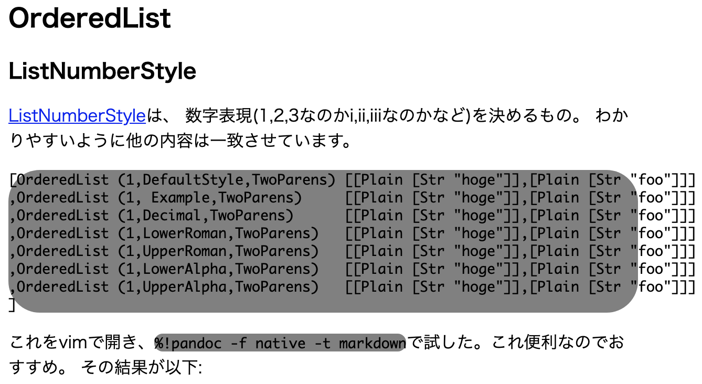
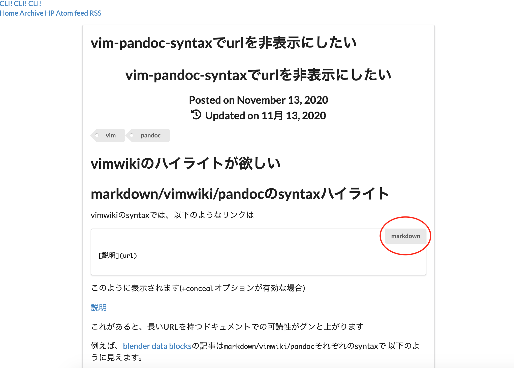
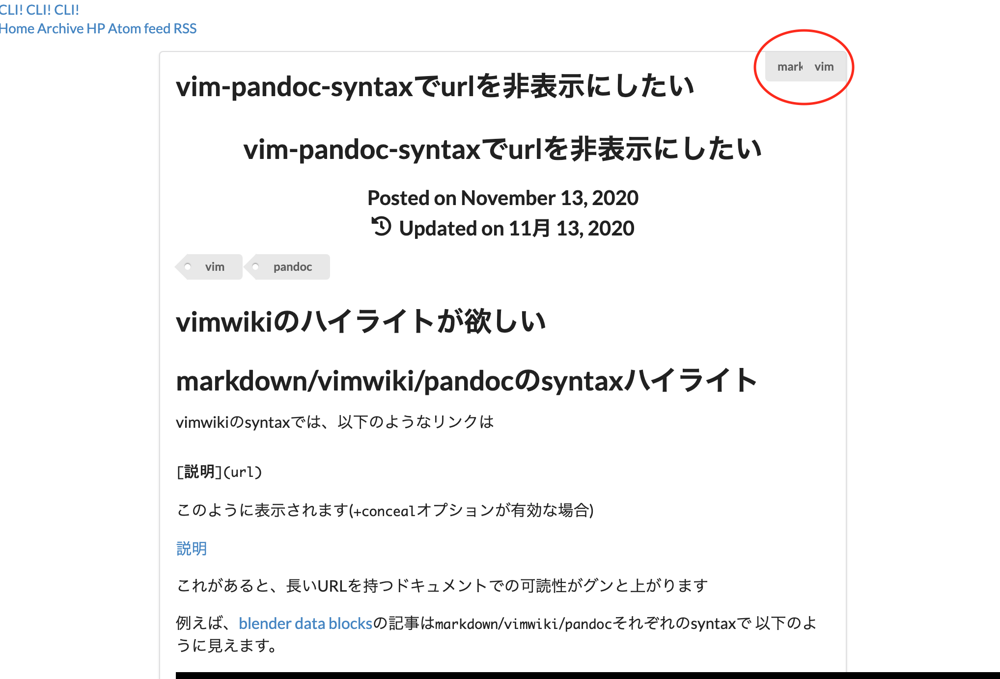
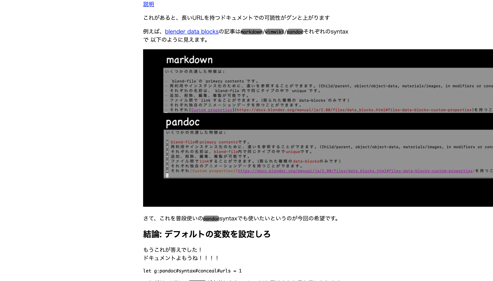
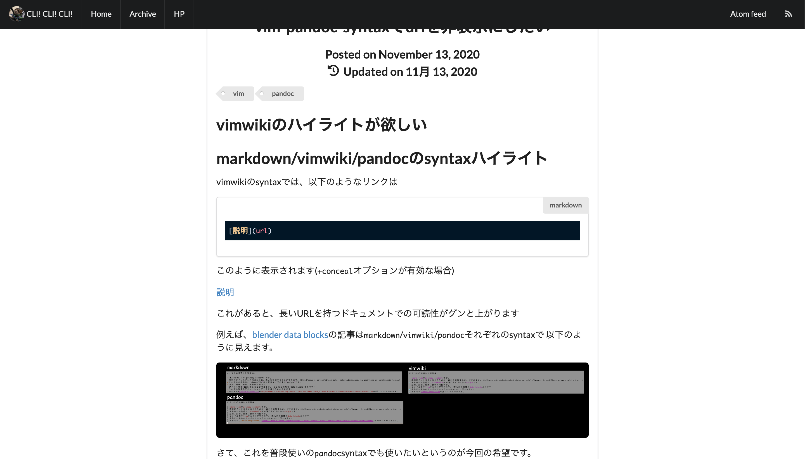

CLI! CLI! CLI!
CLI! CLI! CLI!ブログの見た目を整える
コードブロックの整形
今まで、コードブロックは酷い見た目でした。 
現在は以下のように表示されるようになりました！
main = do
putStrLn "Hello world!"やったこと
ここでは、以下のFomantic-UI要素を使用しました。
- Segment
- Attached label
又、各コードブロックに同じ処理をするために、HakyllのpandocCompilerWithTransformを使用しています。 syntaxhilightはHakyllに合わせてHighlight.jsを使用しています。
最終的なHTML
<div class="ui segment">
<div class="ui top right attached label"> haskell </div>
<div class="sourceCode" id="cb1">
<pre class="sourceCode haskell SourceCode">
<code class="sourceCode haskell hljs bash">
<span id="cb1-1"><a href="#cb1-1" aria-hidden="true"></a>
main
<span class="ot">=</span>
<span class="kw"><span class="hljs-keyword">do</span></span>
</span>
<span id="cb1-2"><a href="#cb1-2" aria-hidden="true"></a>
<span class="fu">putStrLn</span>
<span class="st"><span class="hljs-string">"Hello world!"</span></span>
</span>
</code>
</pre>
</div>
</div>pandocCompilerWithTransformを使用した処理
pandocCompilerWithTransformはpandocCompilerの一種で、MarkdownなどをPandoc型に変換しその値をいじることができます。 Pandoc型には便利な型クラスWalkableがあるので、これを使用します。
Walkableとは、「値の中を歩き、各子要素を与えられた関数に適用して置き換える」ような処理をします。
- WIP
右上に拡張子を表示する
右上に拡張子を表示するために使われているのが、attached labelです。 注意する点として、これは「コードブロックとは別のdivとして使用する」必要があります。
親Divにsegmentを設定する
codeブロックの親のDivに、class="ui segment"を設定してください。 (他の要素はあっても大丈夫だと思いますが、とにかくsegmentが必要です。)
尚、きちんと調べているわけではないので、他のものでも代用できるのかもしれません。
 (赤丸は注釈)
これをしない場合、ひとまわり上のsegment、どこにもない場合webページの右上にこのラベルが表示されることになります。
 (赤丸は注釈)
テキストの折り返し
これはシンプルにCSSのoverflow:autoを使っています。
画像の整形
これまでは画像が正しいサイズになっておらず、このようになっていました。

現在は、この画像のようになっています。

ui image
ui imageを使うことで、親のSegment以内に納めてくれます。
又それにプラスしてroundedをつけることで角を丸めています。 (最終的にはui rounded imageとなりました)
メニューの作成
画面上部にあるメニューを作成しました。 これは主にui menuを使っています。 それに追加して、viewportの上部に固定するためにfixedを、色を反転させるためにinvertedをつけています。
コンテンツの内容がかぶらないようにする
fixedを使った場合、そのままでは下のdiv(このサイトではidとしてcontentを持つdiv)の内容に被ってしまいます。

そこで、content divにmargin-top: 5emを適用しています。
尚これは、同じ構成をしていたFomantic-UIのモバイルページでの設定値をそのまま持ってきています。 (モバイル端末で見るか、ブラウザの横幅を狭めれば見えると思います)
#content {
margin-top: 5em;
}Feedのリンクを右づめにする
menuの中にあるitemに、rightと入れるだけでそこから下のitem全てが右詰になります。 このサイトだと以下のようになっています。
<div id="header" class="ui fixed inverted menu">
<!-- 省略 -->
<a href="/feeds/atom/general.xml" class="right item">Atom feed</a>
<a href="/feeds/rss/general.xml" class="item"><i class="rss icon"></i></a>
</div>